Librarian Configuration Workspace
The Librarian Configuration Workspace provides information on object models, import rules, function mapping attributes, poll types, scaling factor, value attributes, and so on.
For information on naming conventions for names, paths, and other elements, see Common Rules for Names and Paths in the Management System and Naming Rules for Subsystem Elements in Naming Conventions.
Format of the CSV Data
In order to create instances of S7 PLUS devices, you must create the engineering data in the form of a comma-separated value (CSV) file. A CSV file contains data in which values are represented as text and separated using a separator such as comma (,). The file in the CSV format can be edited in text editors such as Wordpad or Notepad. More elaborate editing can be done using advanced word processing tools, like Excel. A CSV file is divided into the following sections.
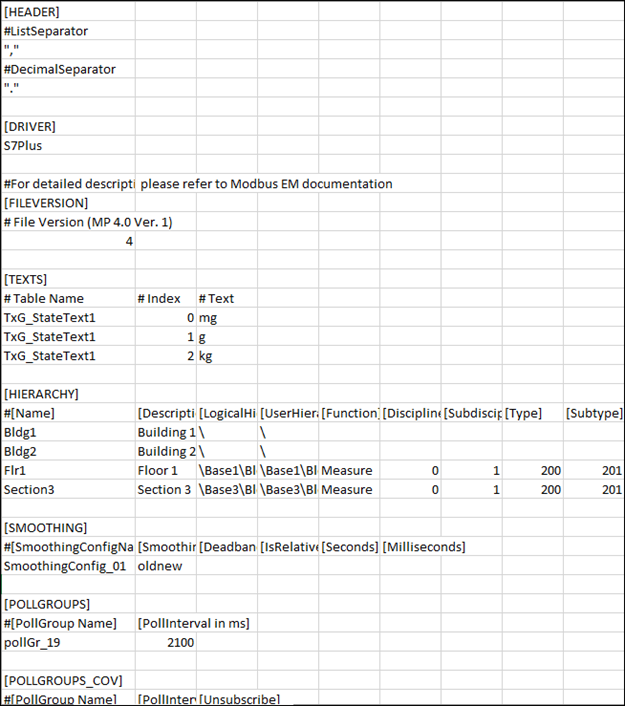
Header
The Header section contains two separators, a List Separator and a Decimal Separator. Both these separators are placed in the same sequence on two subsequent lines. These separators are placed inside quotes for easy identification.
The List Separator is used as a delimiter for parsing of row data in the CSV file.
The Decimal Separator is used for parsing of fields having values as floating point numbers.
Driver
Specifies the name of the subsystem (For example, S7 PLUS) to which the CSV file is associated with.
FileVersion
Displays the current version of the CSV file.
Texts
Allows you to add a new text group to the system.

Hierarchy
Allows you to specify the classification attributes (Discipline, Subdiscipline, Type, Subtype, and Function) to the objects in the Logical and User hierarchy levels.
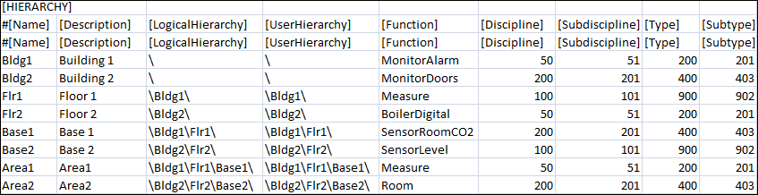
Smoothing
Allows you to specify the smoothing configurations.
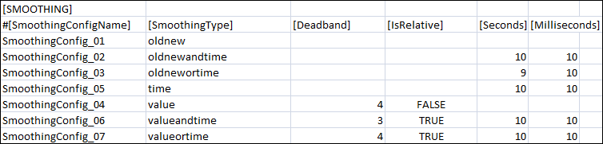
Item | Description |
SmoothingConfigName | Name of a specific smoothing configuration |
SmoothingType | Specifies when the value of a point is to be recorded on the management station. The smoothing types vary according to the datatypes. It is applicable only for points of type INPUT. The possible values for Smoothing Type are: value - Value of a point is recorded on the management station only after it crosses the percentage or absolute limit set for the point in deadband. For example, an integer point has a present value of 100 and a deadband of 5%. As per the concept of value smoothing, the value of the point is recorded on the management station only after the point value exceeds 105 or falls below 95. |
Deadband | The tolerance range specified in Absolute or Relative terms. |
IsRelative | Allows you to specify if an absolute or relative value is to be specified for the deadband. |
Seconds | Tolerance time in seconds |
Milliseconds | Tolerance time in milliseconds |
Item | Description |
Table Name | Name of the text group. |
Index | An integer value representing the different states of the text group. |
Text | Text associated with each integer value of the text group. |
PollGroups
Allows you to import poll groups to the system. If you have created a pollgroup for Pooling, then it can be assigned only to points that have the PollType set to Pooling or Pooling on Demand, it cannot be set for points that have COV as the PollType.
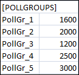
Item | Description |
Poll Group Name | Name of the poll group to be imported in the system. The name of the poll group must start with PollGr. |
Interval | Time interval for the poll group. |
Important Points to consider for Poll Group Import
- Poll groups are applicable only to the points where the Direction field is set to Input and INOUT.
- If the [POLLGROUPS] section is available in the CSV file but there are no poll groups assigned to the points, all poll groups listed in the [POLLGROUPS] section will be imported into the system. After import, they will be added to the following location, Project > Management System > Servers > Main Server > Poll Groups.
- If the poll groups assigned to the points are listed in the [POLLGROUPS] section, the poll groups will be added to Project > Management System > Servers > Main Server > Poll Groups and assigned to the respective points after the import of the CSV file.
- A pollgroup listed in Project > Management System > Servers > Main Server > Poll Groups, but not listed in the [POLLGROUPS] section in the CSV file is associated with a point in the CSV file, then the pollgroup is assigned to the point after import. If the poll group is neither available in the Poll Groups folder nor listed in the [POLLGROUPS] section, an error message will be issued on parsing the CSV file.
- If a data point with input direction does not have a poll group assigned or the assigned poll group is not available in the CSV file or in the Project > Management System > Servers > Main Server > Poll Groups node, the poll group specification is taken from the network node during the import of the CSV file.
- Imported poll groups are present at the following location in the System Browser, Management System > Servers > Main Server > Poll Groups.
PollGroups_COV
Allows you to import poll groups to the system. You can associate poll groups of type COV only to those points that have the polltype as COV. If a pollgroup is created for COV, then it cannot be used for points that have polltype set to Polling on Demand or Polling.
Item | Description |
Poll Group Name | Name of the poll group to be imported in the system. The name of the poll group must start with PollGr. |
Interval | Time interval for the poll group. |
Unsubscribe | Enables switching of poll groups that can only be associated with PollType COV to Polling or Polling on Demand. The value of Unsubscribe can be either of the following: FALSE or 0 - Retain the pollgroup to support only COV polltype. NOTE: |
Library
Name of the S7 PLUS library.
Devices
Device Fields | |
Item | Description |
DeviceName1) | Name of the S7 PLUS device. |
DeviceDescription1) | Description of the S7 PLUS device. |
S7 Type1) | Type of the S7 device. The values can be either of the following: |
IP_address1) | IP address of the S7 PLUS device. |
AccessPoint S71) | Name of the access point. This value is S7ONLINE. |
Projectname | Name of the project exported from the Totally Integrated Automated (TIA) portal to support offline browsing |
StationName | Name of the PLC in the Totally Integrated Automated (TIA) portal to support offline browsing |
EstablishmentMode | Connects or disconnects the device with the network. The values can be either of the following: False or 0 – Disconnect device from network NOTE: If the value of Establishment Mode is any other than the True or False, then the current state of the point will be retained on re-importing the CSV file. |
Alias | Alias associated with the device. The alias is unique across the management station. |
Function | User-defined function. |
Discipline | Discipline to which the S7 PLUS device should be associated with. |
Subdiscipline | Subdiscipline to which the S7 PLUS device should be associated with. |
Type | Type of S7 PLUS device. |
Subtype | Subtype of the S7 PLUS device. |
1) | Mandatory field |
Points
Points Fields | |
Item | Description |
ParentDeviceName1) | Name of the S7 PLUS device below which the point is to be created. |
Name1) | Name of the S7 PLUS point. |
Description1) | Description of the S7 PLUS point. |
Address1) | The Importer will reject the entry if this field is empty. |
DataType1) | Data type of the S7 PLUS point. For Standard Object Model import, it is a CSV datatype. It is used along with [Direction] to derive the Transformation Type and standard object model of a point using import rules. Valid CSV datatypes include, Bool, Byte, Word, DWord, USint, UInt, UDInt, SInt, Int, DInt, Real, Date, DateTime, Time, TOD, S5Time, String, WString, ENUM. For N to 1 mapping, it is the Transformation Type (datatype of the property on the device). Valid transformation types include, Bool, Byte, Word, DWord, USint, UInt, UDInt, SInt, Int, DInt, Real, Date, DateTime, Time, TOD, S5Time, String, WString. |
Direction1) | Input/Output direction of the point. Possible values are: |
LowLevelComparison1) | Low Level Comparison is applicable for only those properties with Directionas Input or InputOutput. True or 1: The driver sets the value only in case of changes. NOTE: You must explicitly specify the value for LowLevelComparison. Any empty or invalid entry will be considered as an invalid configuration and the point will be ignored during import. |
PollType1) | Type of polling that will be applicable to the data points. There are 3 polling types: POD (Polling on Demand) – The point will be polled only if either of the following conditions are fulfilled: 2. The VL flag is checked for that point. 3. The point is used in applications such as Graphics, Trends, Reports, or Scheduler. COV (Change of Value) – The point will be polled only if there is a change in value of the point on the device. For more information, see PollTypes |
PollGroup | Name of the poll group to be associated with the point. |
ObjectModel | Object Model of the point. You do not need to specify a value in this field, if you are importing S7 PLUS points using Native Object Models. However, if you are importing S7 PLUS points using N to 1 mapping, you must specify the value of the object model and property. Before specifying a name you must ensure that an object model is defined in the system. For information on creating object models, see Create Object Models |
Property | Property of the object model. |
Alias | Alias associated with the connection. The alias is unique across the management station. |
Function | User-defined function. |
Discipline | Discipline to which the S7 PLUS data point should be associated with. |
Subdiscipline | Subdiscipline to which the S7 PLUS data point should be associated with. |
Type | Type of S7 PLUS data point. |
Subtype | Subtype of the S7 PLUS data point. |
Min | Minimum value set for a field point. The syntax depends on the mentioned data type. If it is not present, then it is taken from the object model. |
Max | Maximum value set for the field point. The syntax depends on the mentioned data type. If it is not present, then it is taken from the object model. |
MinRaw | Lower end of the raw value scale. |
MaxRaw | Upper end of the raw value scale. |
MinEng | Lower end of your engineering value scale. |
MaxEng | Upper end of your engineering value scale. |
Resolution | The number of digits that display after the decimal point (resolution value). This field applies only to values of type REAL. |
Unit | Selection list for a unit from the selected text group. (For example, %, min, °C, and so on). If it is blank, then no unit is set for this point. |
UnitTextGroup | Name of the text group where unit text from the Unit field is defined. If the unit text group is blank, then by default TxG_EngineeringUnits is used. |
StateText | Name of the text group. This text group could be either from the list of text groups defined in the Texts section or from the text groups present in the system. This field applies only for BOOL and ENUM data types. |
ActivityLog | Status of the AL flag for the point. The possible values are: FALSE or 0 – Turns OFF the AL flag for the point on importing the CSV. NOTE: If no value is specified in this field, then the current state of the point will be retained on re-importing the CSV file. |
ValueLog | Status of the VL flag for the point. The possible values are: FALSE or 0 – Turns OFF the VL flag for the point on importing the CSV. NOTE: If no value is specified in this field, then the current state of the point will be retained on re-importing the CSV file. |
Smoothing | Name of the smoothing configuration to be associated with the point. This value is specified from the [SMOOTHING] section. |
AlarmClass | Generic Alarm class. |
AlarmType | Workstation Alarm Type |
AlarmValue | Defines the value for which an alarm is reported. The range is indicated by the $ character. For example, if the Alarm Value is 40$50, it means that alarm values are between 40 and 50. |
EventText | Alarm text for incoming event. For multiple alarms, multiple event texts can be defined. |
NormalText | Alarm text for outgoing event. For multiple alarms, multiple normal texts can be defined. |
UpperHysteresis | Defines the upper range for the alarm value; beyond which alarms will be generated. For example, if the alarm set for the value is greater than 50 and the UpperHysteresis is set to 2, then the alarm is only generated when the alarm value reaches 52. |
LowerHysteresis | Defines the lower range for the alarm value below which alarms will be generated. This value is always specified as a negative. For example, if the alarm set for the value is less than 50 and the LowerHysterisis is set to -2, then the alarm is only generated when the alarm value falls to less than 48. |
NoAlarmOn | Defines whether or not an alarm is triggered whenever the connection to the device is lost. This field can have either of the following values: |
LogicalHierarchy | Logical Hierarchy of the data point in the logical view. The logical hierarchy path in the CSV file must start with a backslash (\). Syntax:[Delimiter]<Level1>[Delimiter]<Level2> [Delimiter]…[Delimiter]<Level-n>[Delimiter]<(Optional) Name Of the datapoint> For example, \BuildingA\Floor3\Room403\Sensor1 The last entry after the backslash (\) represents the name of the datapoint in the logical view. This entry is not mandatory. If the name of the datapoint is not specified in the Logical Hierarchy field, then on import, the name of the datapoint as specified in the Name field displays in the logical hierarchy path of the System Browser. For example, a datapoint with name Light403_11 in the Name field has the following value in the Logical Hierachy field, \BuildingA\Floor3\Room403\. On importing the CSV file, the logical hierarchy path as displayed in the System Browser will be, <Logical Hierarchy Root Node>\BuildingA\Floor3\Room403\Light403_11. This is because in the Logical Hierarchy field, the name of the datapoint is not specified. However, if we change the path in the Logical Hierarchy field to, \BuildingA\Floor3\Room403\Light403, then on importing the CSV file, the logical hierarchy path as displayed in the system browser will be, <Logical Hierarchy Root Node>\BuildingA\Floor3\Room403\Light403. This is because in the Logical Hierarchy field, the name of the datapoint is specified as Light403. |
UserHierarchy | User Hierarchy of the data point in the user view. The user hierarchy path in the CSV file must start with a backslash (\). Syntax:[Delimiter]<Level1>[Delimiter]<Level2> [Delimiter]…[Delimiter]<Level-n>[Delimiter]<(Optional) Name Of the datapoint> For example, \BuildingA\Floor3\Room403\Sensor1 The last entry after the backslash (\) represents the name of the datapoint in the user view. This entry is not mandatory. If the name of the datapoint is not specified in the UserHierarchy field, then on import, the name of the datapoint as specified in the Name field displays in the user hierarchy path of the System Browser. For example, a datapoint with name Light403_11 in the Name field has the following value in the UserHierarchy field, \BuildingA\Floor3\Room403\. On importing the CSV file, the user hierarchy path as displayed in the System Browser will be, <User Hierarchy Root Node>\BuildingA\Floor3\Room403\Light403_11. This is because in the UserHierarchy field, the name of the datapoint is not specified. However, if we change the path in the UserHierarchy field to, \BuildingA\Floor3\Room403\Light403, then on importing the CSV file, the user hierarchy path as displayed in the system browser will be, <User Hierarchy Root Node>\BuildingA\Floor3\Room403\Light403. This is because in the UserHierarchy field, the name of the datapoint is specified as Light403. |
1) | Mandatory field |
N to 1 Mapping
The concept of N to 1 mapping is used in situations in which you want to assign the address to specific properties of an object. The properties to which the address is to be assigned are specified in the [Property] field next to [Object Model] in the [POINTS] section of the CSV.
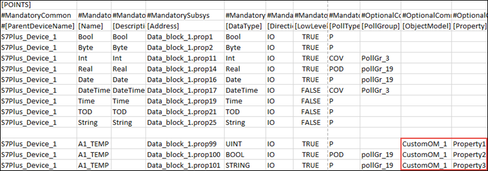
In this example, we will assign the address to Property 1, Property 2, and Property 3 of the CustomOM_1 object model.
Value Assignment
Allows you to assign a value to the Semantic_Tag or any propertyof type String to any S7 PLUS device or point. The property must be present in the object model of the device or point. You can also assign the Semantic_Tag property to any device or point that is present in the system or in the CSV file.
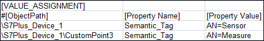
After importing the CSV file the Semantic_Tag property is assigned to the S7Plus_Device_1 device and CustomPoint3. The property and it’s value displays in the Extended Operation tab if those properties are configured to display in Extended Operation tab.
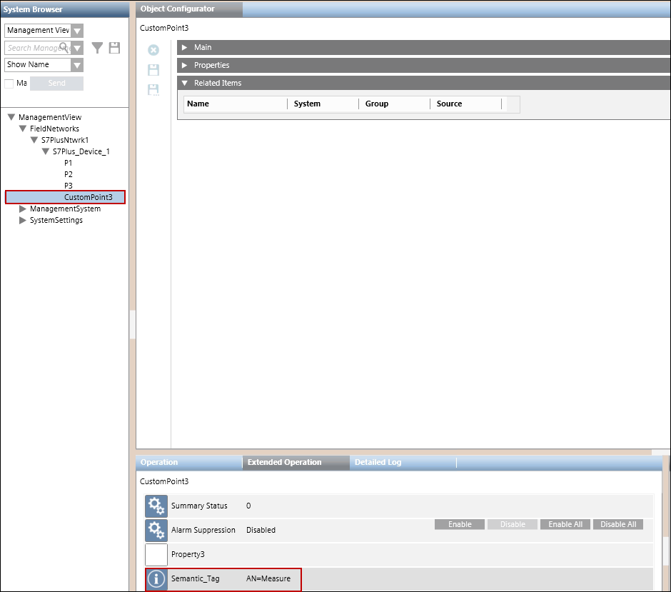
Import Rules for S7 PLUS Devices
Import Rules allow you to configure the rules for importing the object definitions for the objects of a particular S7 PLUS family. You can configure the import rules from the Import Rules folder in the S7 PLUS library. Before proceeding with the configuration, you must ensure that the S7 PLUS library is customized to the headquarter level as the importer reads and sets the rules from the headquarter level only.
Each Import Rules library element contains the rules for a specific product family (such as S7 PLUS and so on).
Using Import Rules, you can define the objects and properties for the import rules using the Objects and Properties expander. You can create another object with Copy Object and delete an object with Remove Object.

Modifying the Import Rules
Modifying the Import Rules may seriously affect the system's behavior and should always be done by a qualified system librarian. Do not modify any of such rules unless you know exactly what you are doing.
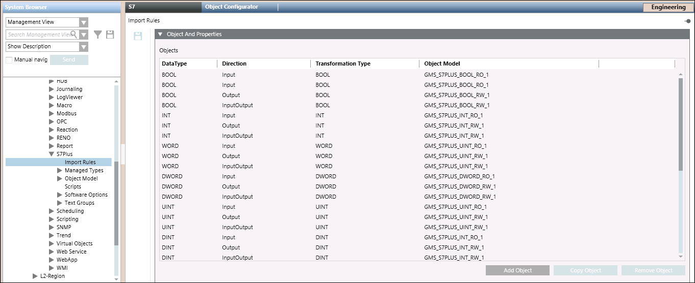
Objects and Properties Expander
The Objects and Properties expander allows you to change the configuration of existing objects, create new entries, or removed unwanted object entries.
Objects and Properties Expander Fields | |
| Description |
DataType | Displays the S7 PLUS types (objects) contained in the S7 PLUS CSV file.
|
Direction | Displays the directions of the object, Input, Output, or InputOutput. |
Transformation Type | Displays the transformation types. |
Object Model | For each S7 PLUS object type, you can select or edit a specific object model. |
Add Object | Adds a new import rules entry to the table. |
Copy Object | Copy the selected object to the table. |
Remove Object | Remove the selected object from the table. |
Parsing Information in the CSV File
The csv file is parsed for errors and inconsistencies by the importer during the import process. The Importer can only parse CSV files which use a comma (,) as a separator. The CSV file contains mandatory, as well as non-mandatory data.
The following table provides more information related to the parsing of data with reference to mandatory and non-mandatory information in the CSV file.
Error Condition | Result |
Value of a mandatory field is incorrect in a CSV file row | The data in the entire row is not allowed for import. |
Value of a mandatory field is blank in a CSV file row | The data in the entire row is not allowed for import. Information is logged as as error message in the Analysis Log and Trace Viewer. |
Value of a non mandatory field is incorrect in a CSV file row | The value of that particular field is not allowed for import. However, the other values in the row are imported. Information is logged as a warning message in the Analysis Log and Trace Viewer. |
Value of a non mandatory field is blank in a CSV file row | The entire row is imported. This information is logged as a warning message in the Analysis Log and Trace Viewer. |
The Importer parses the CSV file row by row and imports the data in that row if it does not have any of the above mentioned error conditions. On successful import, the objects are created below the S7 PLUS network node in the System Browser.
Validations for Parsing the CSV File Entries for Devices
- If the given device name contains invalid characters, then it is treated as invalid.
- If the given device name contains special characters other than underscore( _ ), then it is treated as invalid.
- If the given device name ends with (_2), then it is ignored. Device names ending with (_2) are reserved by WinCC OA for project redundancy.
- If the given device name already exists in the same CSV file, then the new entry is treated as invalid.
- If an ObjectModel that is mentioned in the CSV file does not exist in the system, then it is treated as invalid.
- If the CSV file contains only device entries and the other sections are not present, then those entries are ignored.
- If a point entry is present above the device entry, then the point entry is ignored. A point is always present below the device entry.
- If there are any point entries present without the parent entry of the device, then those point entries are ignored.
- There can be multiple point entries under a device entry in the CSV file.
Activity and Online Trend Logging
You can configure the activity and online trend logging for a point by specifying either of the following values in the CSV file:
- TRUE or 1
- FALSE or 0
If no value is specified in this field, then the current state of the point will be retained on re-importing the CSV file.
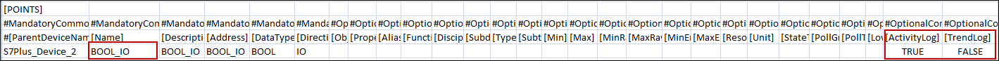
After importing the CSV file, the Properties expander will reflect the following values:
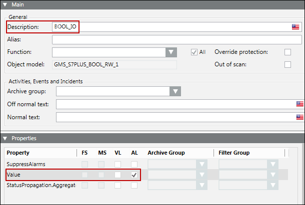
Min, Max, Unit, Resolution
The Min, Max, Resolution, Unit data in the CSV can be configured as follows:
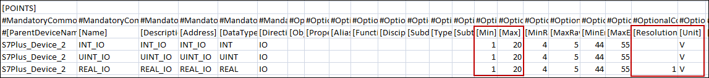
The Min, Max, and Unit fields can be set for values of type INT, UINT, REAL.
The Resolution field can be set only for values of type REAL.
After importing the CSV file, the Details expander reflects the changes.
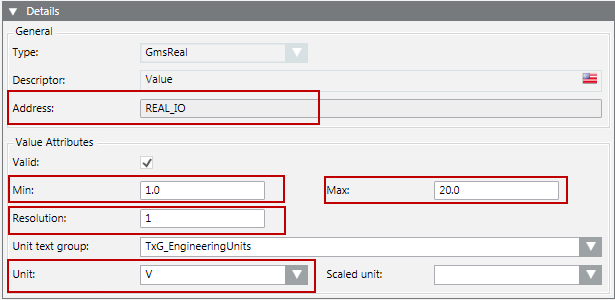
S7 PLUS DataTypes
S7 Data Type | Range | |
Min | Max | |
S5TIME | 0H_0M_0S | 2H_46M_30S |
TIME | -24D_20H_31M_23S | 24D_20H_31M_23S |
TIME OF DAY | 0:0:0 | 23:59:59 |
For other datatypes, the values for Min and Max are defined as configured in the object model.
Scaling Factor
The Min Raw, Max Raw, Min Eng, and Max Eng data in the CSV can be configured as follows:
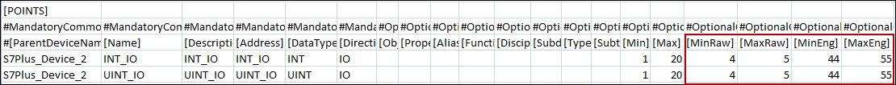
These values are allowed only for data of type INT, UINT and FLOAT. You can also assign negative values to these fields. However, the values should not be equal.
After importing the CSV file, the Value Conversion expander reflects the changes.
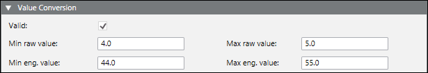
Alarming
To configure a workstation alarm for a point, you must configure the following fields:
- AlarmClass: The alarm class to be enabled for an event.
- AlarmType: The condition for issuing an alarm. Refer to the table below.
- AlarmValue: The value, or range of values, for which an alarm is to be issued.
- EventText: The text to display when the alarm is issued.
- NormalText: The text to display when the alarm ceases.
- UpperHysteresis: The upper range for the alarm value; beyond which alarms will be generated.
- LowerHysteresis: The lower range for the alarm value; below which alarms will be generated.
Alarm Type Operators and Their Meanings | |||
AlarmType Operators | Operand | Meaning | Applicable Alarm Category |
OR | = | Equal to (only for binary points) | Discrete |
EQ | || | OR | |
NE | !|| | NOR | |
BET | .. | In the range of two values | |
NBET | !.. | Not in the range of the two values | |
LT | < | Less than | Continuous |
LE | <= | Less than or equal to | |
GT | > | Greater than | |
GE | >= | Greater than or equal to | |
Error Conditions for Workstation Alarms
- Supported alarm type values are: EQ (equal), NE (not equal), LT (less than), LE (less than or equal), GT (greater than), GE (greater than or equal), BET (between), NBET (not between).
- EQ (equal to) is the only supported alarm type value for binary (Boolean) points.
- Only one alarm can be specified for binary (Boolean) points.
- Alarm configuration is ignored if discrete and continuous alarms are mixed. Refer to the table for categorization of alarm types.
- Alarm configuration is ignored if the number of alarm values and range is inconsistent in the alarm configuration columns.
- Alarm types BET and NBET are not supported for items with state texts.
The following examples illustrate single and multiple alarm configurations.
Alarm Configuration for a Single Alarm
The CSV configuration for a single alarm is as follows.
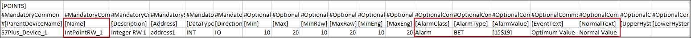
After importing the above CSV, the alarm will be configured as follows.
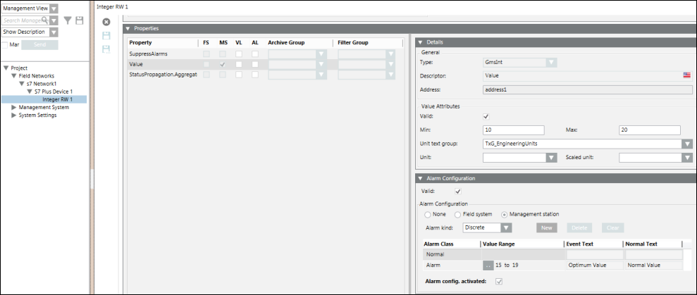
Alarm Configuration for Multiple Alarms
The CSV configuration for multiple alarm is as follows.
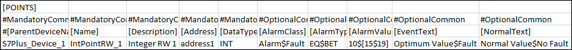
After the import of the above CSV, the alarm configuration looks like this.
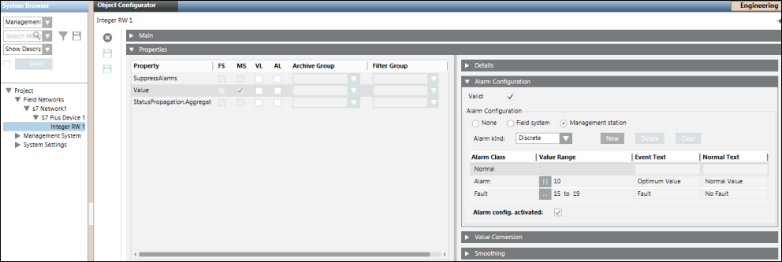
State Texts for Enumerated and Boolean Types
Enumerated and Boolean data types usually require specific texts to be displayed instead of raw values. For example, the 0 / 1 of Boolean type must be represented as Start/Stop. This is achieved by specifying the texts in the StateText field. The discrete state texts are separated by the $ character.
The StateText attribute in a CSV for a Boolean point can be configured as follows:
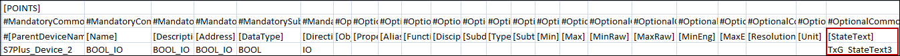
Since a Boolean point can have a maximum of two states, the text group also has two states. These two states correspond to the two value range of Minimum and Maximum. After the CSV import, the Details expander displays as follows:
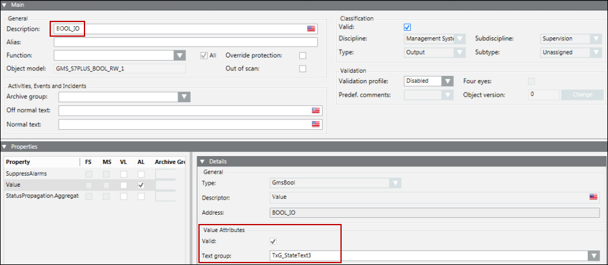
To represent more than two states, you must configure the StateText attribute of a multi state point. In the CSV file example shown below, the text group has three states’ State1, State2, and State3.
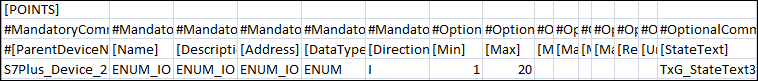
After the CSV import, the Details expander displays as follows:
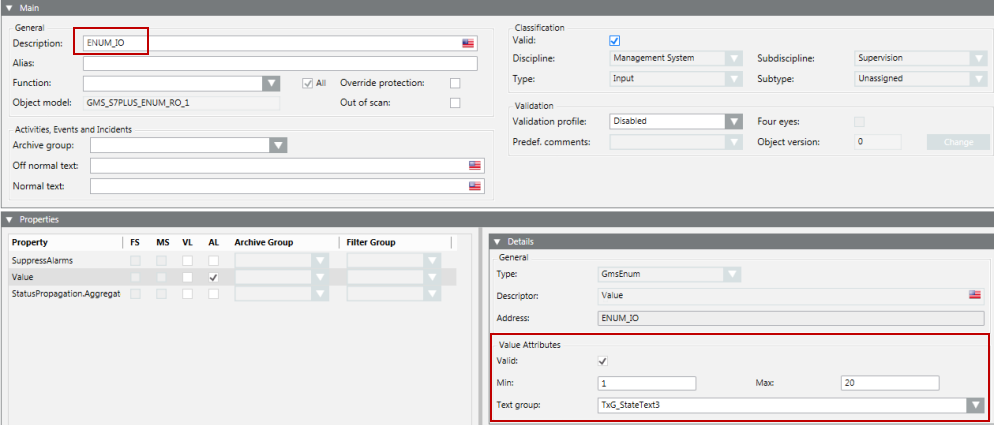
Now, from the drop down list, you can select the state from the list of states. Selecting a state will write the corresponding value to the point. The range of this value is between the minimum and maximum specified in the CSV file.
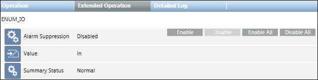
After importing the CSV for such a point, its text group is also added to the list of text groups. The following image displays the Text Group Editor showing the three state texts.
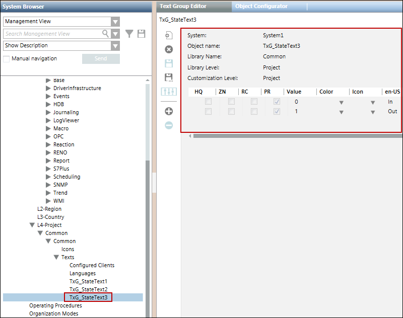
The Importer verifies the text group names either from the text groups defined in the Text section in the same CSV file, or from the text groups present in the system.
StateTexts are applicable only for Multistate and Binary points since floating point values do not have integral states. However, the Importer ignores the StateText data for all other datatypes.
During re-import, the Importer replaces an existing text group of the point with the new text group mentioned in the CSV file.
Dependency of StateTexts on the Minimum and Maximum Values of a Point
During the parsing of a CSV file, the StateTexts are verified with the minimum and maximum values given in the CSV file. The Importer can fail in parsing StateTexts due to the following reasons:
- The minimum and maximum values are invalid (for example, format error, non-integral values).
- The interval between the minimum and the maximum value is not equal to the number of StateTexts provided in the entry.
- The minimum is equal to maximum.
In such cases, a warning message is added to the Preimport log file. However, the parsing continues ignoring the StateText values of such a point.
Function Mapping
- If all the classification attributes (Discipline, Subdiscipline, Type, Subtype, Functions) are defined in the CSV file, then on importing the CSV file, the proper classification attributes are assigned to the S7 Plus Devices and Points.
- If the value of function is not specified in the CSV file, then on importing the CSV file, function is not assigned and the Function field remains blank.
- If the function is mentioned in the CSV file but Discipline, Subdiscipline, Type, and Subtype are not specified, then on importing the CSV file, the values for Discipline, Subdiscipline, Type, and Subtype are associated according to the assigned function.
- If the Manual Override check box is selected, then on re-importing the CSV file, the values of the classification attributes are retained and are not overridden by the CSV values.
- When re-importing the CSV file, if the classification attributes are not specified, then the existing attributes are retained.
PollTypes
PollTypes indicate the type of polling that will be applicable to the data points. There are 3 polling types:
P (Polling) – The point will poll the values after the time interval specified with the associated pollgroup.
POD (Polling on Demand) – The point will be polled only if either of the following conditions are fulfilled:
- The point is selected in the Object Configurator.
- The VL flag is checked for that point.
- The point is used in applications such as Graphics, Trends, Reports, or Scheduler.
COV (Change of Value) – The point will be polled only if there is a change in value of the point on the device.
The following table provides information on the PollGroups and PollTypes that will be associated with a point after importing the CSV file.
| PollGroup in CSV | |||
Blank | Invalid | PollGroupForPolling | PollGroupForCOV | |
PollType in CSV |
|
|
|
|
Polling | Network PollGroup is assigned to the point | Network PollGroup is assigned to the point | PollGroup for Polling is assigned to the point. | Displays an Error Message. Assigns the Network PollGroup to the point. |
PollingOnDemand | Displays an Error Message | Displays an Error Message and the point is ignored. | PollGroup for Polling is assigned to the point. | Displays an Error Message and ignores the point. |
COV | Displays an Error Message | Displays an Error Message | Displays an Error Message and the point is ignored. | PollGroup for COV is assigned to the point. |
Alarm Configuration
You can configure alarms for S7 PLUS Devices from the State.Connections.OpState_1 property.
Whenever the device goes into the Stop state (0) an alarm is raised on the management station. This indicates that the device is not operational. When the state of the device changes, you can acknowledge the alarm.
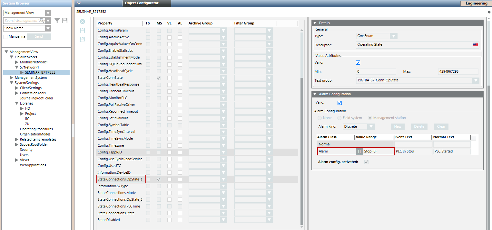
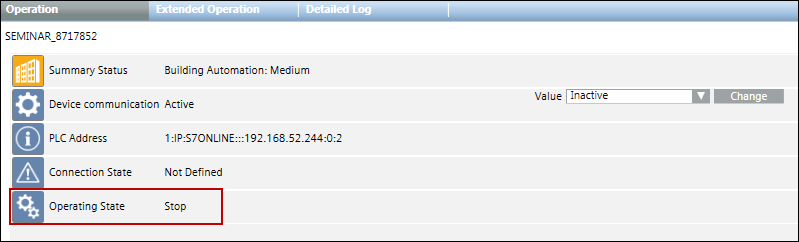